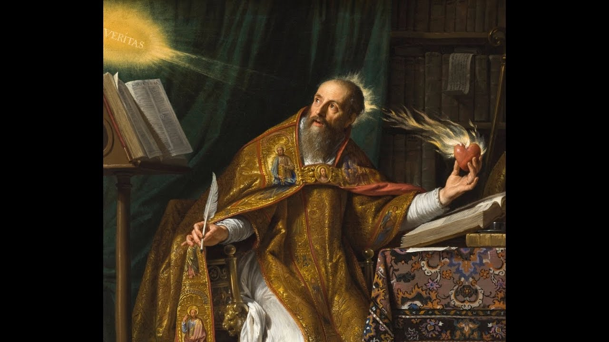

Filosofía Presocrática
Aristóteles expone en su Metafísica que Tales de Mileto fue el iniciador de un tipo de filosofía que concibió que el principio de todos los entes era de índole material. A partir de esta consideración la tradición entera de la historiografía ha dado por sentado que Tales fue el primer filósofo, y aún William Keith Chambers Guthrie se apoya en esta autoridad para empezar sus consideraciones sobre la historia de la filosofía griega comenzando por los filósofos milesios. Sin embargo, el origen de este tipo de indagación ha sido explicado de diferentes maneras por la filología y la filosofía contemporánea.
John Burnet expresa la opinión común de principios del siglo XX al decir que en los pensadores jonios, el logos se libera, de golpe, de las concepciones míticas imperantes. Esto se debería sobre todo a una excepcional cualidad de inteligencia y espíritu de observación del hombre griego. A partir de esta discontinuidad radical que supone el advenimiento del logos, la ciencia occidental no ha tenido más que seguir la vía marcada por los filósofos jonios. Esta manera de entender el inicio del pensamiento filosófico encuentra eco en Bruno Snell, aun cuando este sigue una perspectiva más histórica.
Después de las importantes obras de Cornford: De la Religión a la Filosofía (1912) y Principium sapientiae (obra póstuma, 1952) este tipo de visiones han dejado lugar a explicaciones más matizadas. Para Cornford, el comienzo de la filosofía sigue en estrecha relación con el comienzo de la ciencia. Por eso también observó la influencia de la astrología y la aritmética babilónicas y la geometría egipcia en la formación de la mentalidad filosófica, si bien esta mentalidad transforma el afán práctico que estas disciplinas tenían en sus culturas de origen (la astrología babilónica estaba al servicio de la religión oficial, y la geometría egipcia estaba destinada a medir campos de cultivo concretos) en un afán puramente teórico. Ello se da en virtud del descubrimiento, propio de los griegos, de la forma, independiente de la materia. El primero que vinculó el inicio de la ciencia (la matemática) con intereses exclusivamente especulativos (o sea, con intereses ajenos al placer o a lo necesario) fue Aristóteles, en Metafísica I, 981b13ss.
Filosofía Medieval

La filosofía medieval es la filosofía que se desarrolló en Europa y Oriente Medio durante lo que hoy se llama el Medioevo o la Edad Media, que se extiende aproximadamente desde la caída del Imperio Romano hasta el Renacimiento. La Stanford Encyclopedia of Philosophy describe la filosofía medieval como la "receta" de una combinación de "la filosofía pagana con la nueva religión cristiana" y "una variedad de aromas de la herencia intelectual judía e islámica" cocinada por unos 1300 años. Algunas de estas doctrinas fueron especialmente difíciles de combinar (como la encarnación y la trinidad), pero el esfuerzo por resolverlas fue el motor de gran parte de la filosofía medieval, y llevó a desarrollar conceptos, teorías y distinciones que heredaría toda la filosofía posterior.
El filósofo inglés sir Anthony Kenny declaró en su libro Una nueva historia de la filosofía occidental que para "el desarrollo después de la filosofía el evento más importante en el siglo I fue la vida de Jesús de Nazaret". El impacto del cristianismo en la filosofía occidental tuvo dos grandes efectos: Primero, redujo el interés por la filosofía; y segundo, la filosofía paso a ser "sierva" de la teología, siendo las conjeturas paganas opuestas a los dogmas de fe rechazadas. Sin embargo, la influencia de la filosofía pagana fue crucial para la filosofía medieval.
Tras la muerte de Jesús, sus discípulos (entre ellos Pablo) mantienen una actividad de evangelización por casi 300 años, volviéndose el cristianismo en la religión oficial del Imperio Romano. Durante los primeros siglos de la era común, se hicieron grandes esfuerzos de conciliar la filosofía pagana al servicio del cristianismo, como Justino Mártir, Clemente de Alejandría, Gregorio de Nisa, Orígenes y Eusebio de Cesarea. La doctrina elaborada por los Padres de la Iglesia se llama patrística. San Agustín de Hipona, el más famoso de ellos, alabó las enseñanzas neoplatónicas con el cristianismo. Otros pensadores se opusieron, como Tertuliano y Lactancio.